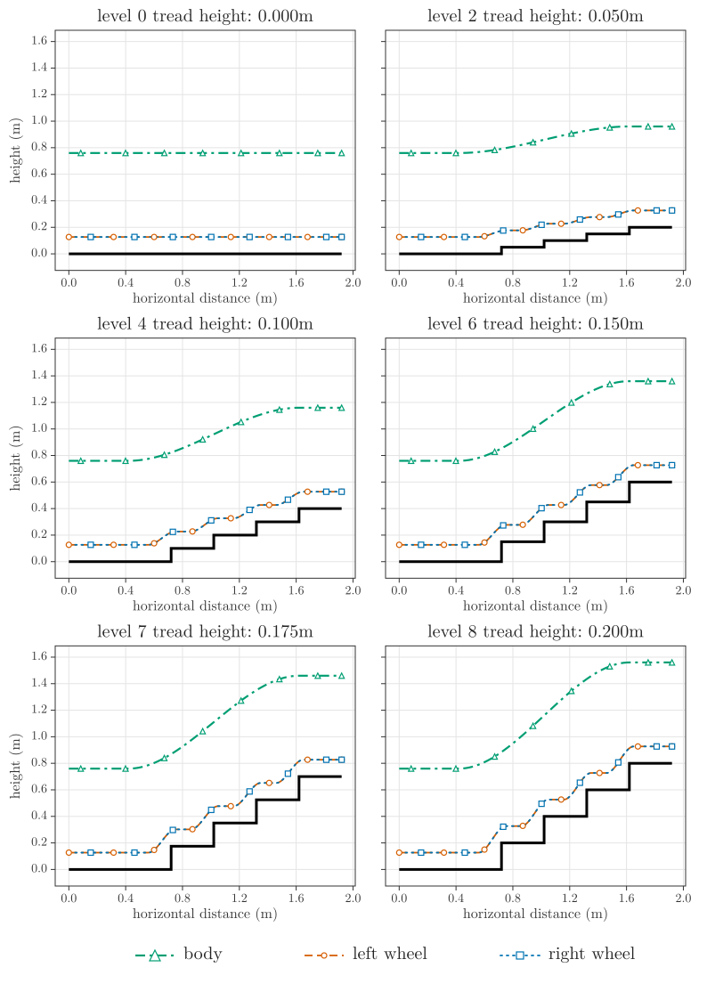
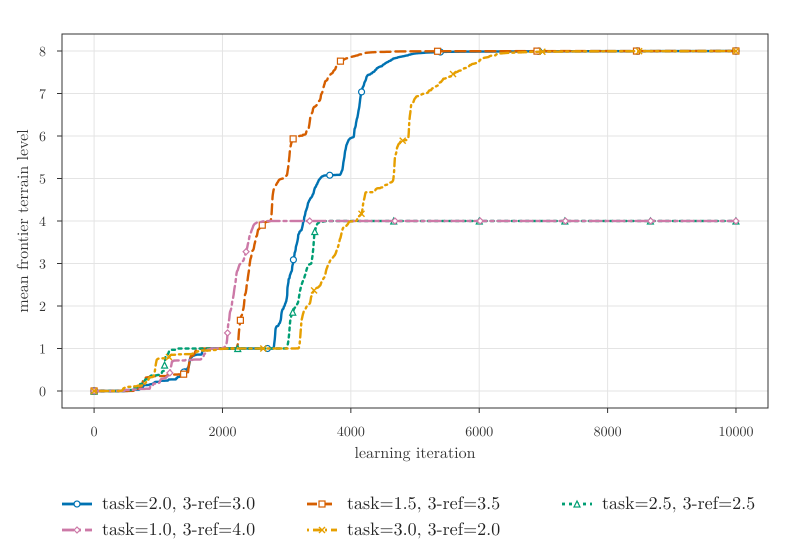
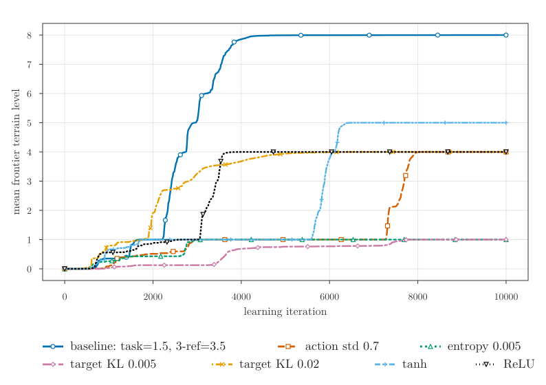

Reward balance: task=1.5, 3-ref=3.5
Best curriculum progression in the reward-weight sensitivity study.
Open video fileMaster thesis supplementary material
Supplementary material for a master thesis on reference-guided Proximal Policy Optimization (PPO) for simulated stair climbing with a legged-wheel robot.
The project studies whether a policy can use predefined body and wheel reference trajectories to learn stable stair traversal in Isaac Lab. The page focuses on rendered evaluation videos and key figures. The thesis PDF is intentionally not included here.
The videos below show deterministic play evaluations from selected trained policies.
Best curriculum progression in the reward-weight sensitivity study.
Open video fileVariant that stalled at the 5th difficulty level. It could not learn behavior enabling it to climb step heights taller than the wheel radius.
Open video fileThe PPO settings below were used for pretraining and stair fine-tuning. They were held fixed in the reward-weight sensitivity study, where only wtask and w3ref were varied. After selecting (wtask, w3ref) = (1.5, 3.5), these settings define the PPO baseline from which the hyperparameter variants change one selected PPO setting.
| Parameter | Value |
|---|---|
| Rollout length | 24 steps |
| Learning epochs | 5 |
| Mini-batches per epoch | 4 |
| Discount factor γ | 0.99 |
| GAE parameter λ | 0.95 |
| PPO clip parameter | 0.2 |
| Value loss coefficient | 1.0 |
| Entropy coefficient | 0.01 |
| Gradient norm clipping | 1.0 |
| Initial action standard deviation | 1.0 |
| Learning rate | 1 × 10-3, adaptive |
| Adaptive KL target | 0.01 |
| Actor/critic activation | ELU |
The final stair task uses a split exponential reward. PPO maximizes this scalar feedback signal, so the reward acts as a task-specific objective rather than a direct measure of stair-climbing ability. The design separates a base locomotion objective from the three-reference tracking objective.
Rt = walive + wtask exp(-Etask) + w3ref exp(-E3ref) - wlagElag - wregEreg - wcontactCundesired - wterm1terminated - wstillEstill
The exponential terms produce bounded rewards in (0, 1] before their outer weights are applied. This avoids the unbounded negative scale of a pure quadratic objective while still making smaller tracking errors more valuable. Since the terms are manually specified, the learned policy is best interpreted as optimized for this surrogate objective: a measurable proxy for the task designer's assumptions about posture, tracking, regularization, and contact behavior.
Etask preserves stabilizing velocity-locomotion terms for nominal body height, body tilt, wheel placement, and leg symmetry. E3ref measures task-space tracking of body and wheel references from the command vector. The body rotation term penalizes roll, pitch, and yaw deviation from the nominal orientation; in the stair experiments the desired yaw is zero because the motion is straight forward.
E3ref = wb,xeb,x2 + wb,yeb,y2 + wb,zeb,z2 + wb,rEb,rot + ww,x(eL,x2 + eR,x2) + ww,y(eL,y2 + eR,y2) + ww,z(eL,z2 + eR,z2)
Further deterministic play evaluations from the reward-weight and PPO hyperparameter studies.
Reward-weight sensitivity variant.
Open video fileReward-weight sensitivity variant.
Open video fileReward-weight sensitivity variant.
Open video fileReward-weight sensitivity variant.
Open video fileThese variants use the task=1.5, 3-ref=3.5 reward balance above as the comparison baseline. The highlighted tanh variant appears above.
PPO hyperparameter variant.
Open video filePPO hyperparameter variant.
Open video filePPO hyperparameter variant.
Open video filePPO hyperparameter variant.
Open video filePPO hyperparameter variant.
Open video file


This repository is a supplementary project page. It is intended to make the qualitative locomotion behavior easier to inspect alongside the numerical evaluation reported in the thesis.